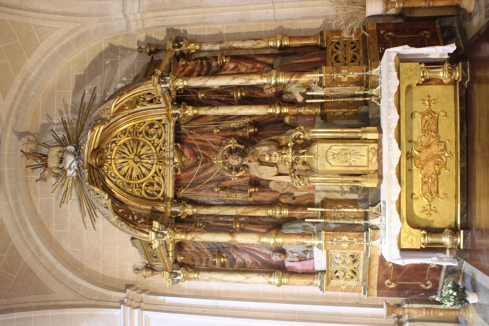

En la Última Cena, Jesús comió por última vez con sus apóstoles e instituyó el sacramento de la Eucaristía. En la parte delantera de la escultura aparece la figura de Jesús sosteniendo un pan con una mano y bendiciéndolo con la otra antes de repartirlo entre los apóstoles. A su espalda, los apóstoles sentados a la mesa.
En el ático del retablo está representado el Cordero de Dios: un cordero con una cruz larga de la que cuelga una banderola en la que se lee “Ecce Agnus Dei” (“Este es el Cordero de Dios” en latín). En las representaciones de la Última Cena, el Cordero de Dios simboliza a Jesucristo como víctima sacrificada por los pecados del mundo y conecta con la cena pascual judía, en la que se comía cordero. Todo el altar, incluida esta escultura de la Última Cena, es contemporáneo de la última ampliación de la iglesia y obra del escultor Miquel Vadell (s. XX).